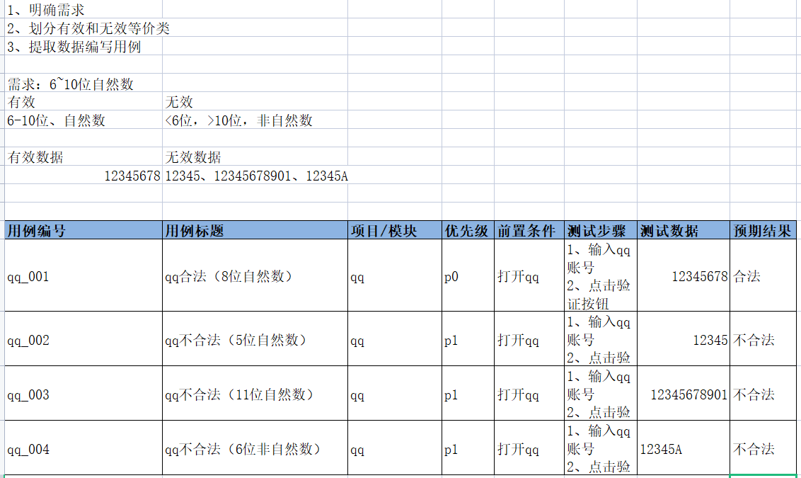
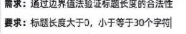
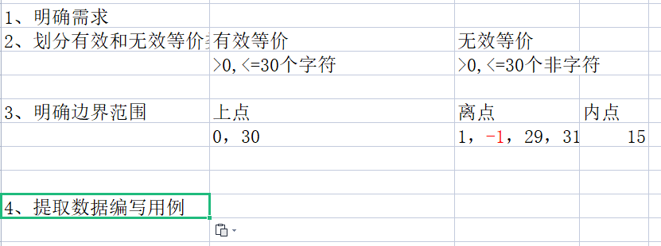
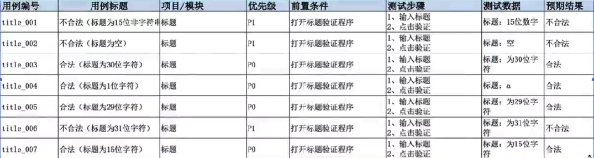
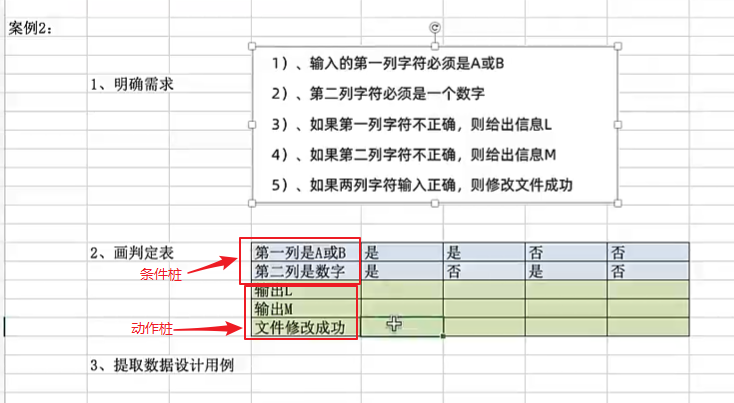
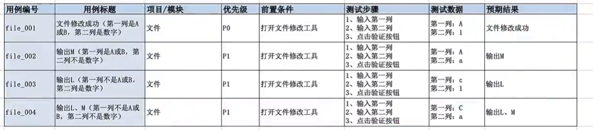

软件测试-用例方法
用例设计方法
等价类划分法
1 | 在所有测试数据中，具有某种共同特征的数据集进行划分。 |
1 | 重点：有效和单个无效等价各取其1即可。 |
1 | 适用场景：能对穷举场景设计测试点（解决穷举场景） |
案例
需求：验证6-10位自然数的qq合法性

边界值分析法
1 | 使用场景：能对限定边界规则设计测试点（解决边界位数限制问题） |
1 | 边界值法设计用例步骤 |



边界值分析优化
1 | 结论：7个优化为5个点 |
判定表方法
1 | 使用场景：解决多条件依赖测试问题，使用判定表来进行测试覆盖。 |
1 | 步骤： |
1 | 使用场景： |
案例
判断表

用例

场景法
覆盖业务测试，需要使用流程图法
先测试业务，在测试单功能、单模块、单页面
场景法也可以叫流程图法。
错误推荐法
通过经验推测系统可能出现的问题
应用场景：当项目用例都执行完毕，且bug修复完成，离上线还有一段时间，在这段时间中可以使用错误推荐法复测主要业务或测试未覆盖的主要功能。
总结
等价类划分
能对穷举场景设计测试点
难点：
1
2
3长度：边界
类型：等价
规则：等价
边界值分析
- 能对限定边界规则进行设计测试点
判定表
- 能对多条件依赖关系进行设计测试点
流程图法（场景法）
能对项目业务进行设计测试点
重点：
1
先测业务，再测单功能、单模块
本博客所有文章除特别声明外，均采用 CC BY-NC-SA 4.0 许可协议。转载请注明来自 Xiaoye456的个人博客！